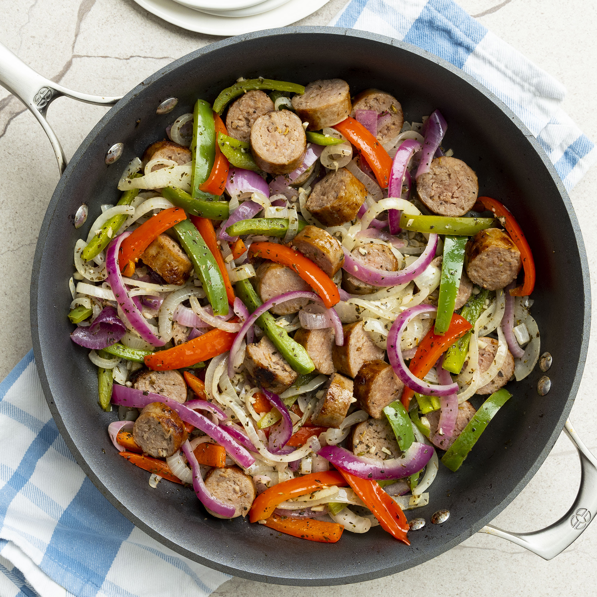

Sausage and Peppers

Description
Satisfy your Italian food craving with this impossibly easy (but
incredibly delicious) sausage and peppers recipe. Since it comes together
quickly with easy-to-find ingredients, it's the perfect
simple-yet-satisfying dinner for busy weeknights.
Ingredients
- Italian sausage
- Butter or oil
- Onion (yellow, red) | sliced
- Garlic | minced
- Red and green bell pepper | sliced
- Dried basil and oregano
- White wine
Steps
-
Cook sausage in a large skillet over medium heat until brown on all
sides, 5 to 7 minutes. Remove from skillet, and slice.
-
Melt butter in the same skillet. Stir in onions and garlic, and cook 2
to 3 minutes. Mix in bell peppers, season with basil and oregano, and
stir in 1/4 cup wine. Continue to cook and stir until peppers and onions
are tender, 5 to 7 minutes.
-
Return sausage slices to the skillet. Reduce heat to low, cover, and
simmer 15 minutes, or until sausage is heated through, adding more wine
if needed.